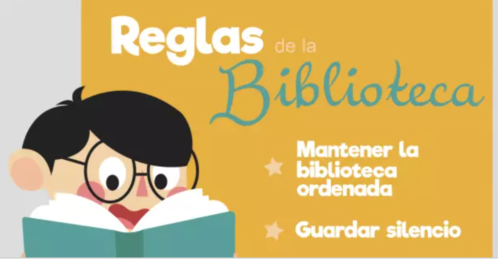

Turul sau prezentarea bibliotecii pentru public și/sau utilizatori.
Orientarea și îndrumarea în spațiile bibliotecii.
Oferirea materialelor promoționale ale bibliotecii.
Accesul, în incinta bibliotecii și/sau de la distanță, la instrumentele de informare despre resursele informaționale și serviciile bibliotecii, inclusiv la catalogul tradițional sau cel electronic al bibliotecii.
Accesul la echipamentul bibliotecii (calculatoare, tablete, printere etc.).
Împrumutul la domiciliu al documentelor tipărite.
Consultarea pe loc a documentelor.
Împrumutul și utilizarea documentelor în incinta bibliotecii.
Împrumutul interbibliotecar național (cu excepția costurilor de reproducere și expediere prin poștă).
Rezervarea documentelor de bibliotecă care nu sunt disponibile la momentul solicitării.
Prelungirea, prin telefon, e-mail și alte mijloace de comunicare, a termenului de împrumut pentru documentele de bibliotecă.
Regulile Bibliotecii

În bibliotecă au acces toți elevii și cadrele didactice din școală.
Cititorul are dreptul să împrumute o carte pe un termen de 10 zile.
Termenul folosirii cărților poate să fie prelungit de bibliotecar, la cererea cititorului.
Cititorul este dator să se poarte atent și grijuliu față de cărți.
La returnarea cărții puteți solicita și de alte materiale.
Cititorul este dator să verifice cărțile luate și să comunice bibliotecara despre posibile
defecte.
Cărțile împrumutate se înscriu în formularul cititorului.
În caz de schimbare a locului de trai, cititorul este dator să returneze cărțile.
În cazul pierderii cărții sau a deteriorării acesteia, cititorul este dator să întoarcă
aceiași carte ori s-o înlocuiască cu alta de acelaș preț.
Cititorilor ce încalcă regulamentul dat, nu li se mai împrumută cărți pe un anumit termen.
Știți cum să păstrați cărțile?
Cine are grijă de carte-inveleștecoperta.
Nu citi când iei masa, căci e posibil să murdărești cartea
Nu pune în carte creioane,pixuri și alte obiecte care pot deforma cartea.
Nu îndoi foile, căci se rup colțurile și se destruge coperta; fă-ți un semn pentru carte.
Nu rupe foile, nu desena și nu scrie nimic ăn ele, nu face semne în carte nici cu creionul, nici cu cerneală, nici cu unghia.